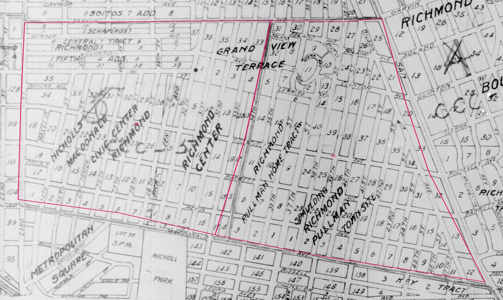
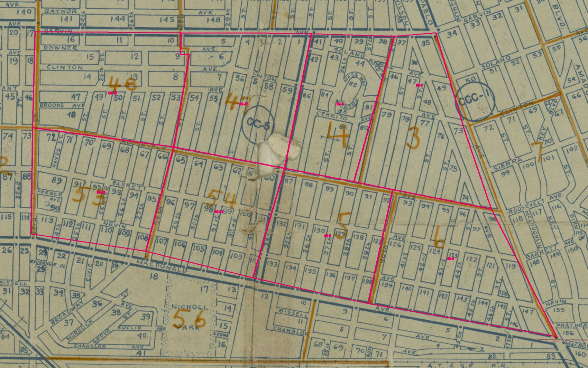

Explore the districts
Same view and scale in both yearsChoose an indicator to compare both years, then select a district to see its demographics and source description. Drag to pan; use the wheel or + / − to zoom. Keyboard users can select a district above, or focus a map and use the arrow and + / − keys.
The default view uses the common reconstructed area of both years. Demographic values describe whole EDs.
1940
22 of 22 districts reconstructed1950
122 of 129 districts reconstructedDistrict record
Select a district on either map
Its original boundary description and reconstruction method will appear here.
Official boundary description
Use the district menu or click a boundary.
Reconstruction method
District demographics
Select a district to view the census summaries linked to it.
Population composition and additional indicators
Statistics cover the whole ED, even when only part of its boundary is displayed in the common-area view. Counts are not apportioned to the clipped area. A dash means unavailable, not applicable, or suppressed; it is not zero. Statistics for all 151 EDs are available in the menu and downloads, including seven 1950 districts without mapped boundaries.
From historical maps to digital boundaries
Original census maps and written descriptions provide the boundary evidence. Road intersections and period topographic maps help place those boundaries in geographic coordinates. The images below show selected source sheets with provisional boundary overlays.


Coverage, reconstruction methods, and sources
1940. Nineteen districts were reconstructed from shared street boundaries using the 1950 geometry and an assumption of unchanged streets, checked against 1940 descriptions. EDs 7-62, 7-63, and 7-80 are separate lower-confidence reconstructions that include coastal or offshore areas. Matching boundaries across years are not independent evidence of historical accuracy.
1950. Most boundaries were traced from census map sheets and georeferenced by map zone. EDs 69-122 and 69-129 use period USGS coastal references. EDs 69-10, 69-22, 69-23, 69-24, and 69-36 have no published boundary here; EDs 69-37 and 69-38 remain outside the validated georeferencing domain and are also omitted.
Common comparison extent. The default view uses the intersection of the reconstructed coverage in 1940 and 1950, applying the same clipping mask to both years. The resulting outer outlines match by construction; they are not evidence of an unchanged shoreline or city boundary. Missing 1950 boundaries also remove the corresponding areas from the 1940 display. This is a display comparison only: demographic counts and shares remain whole-ED measures. Use “Full reconstructed boundaries” to view the original geometry.
Interpretation. These are provisional district boundaries, not household locations or independently validated official GIS files. Modern roads are geographic references, not a reconstruction of the historical street network. Shipyard markers indicate approximate reference locations, not property boundaries.
Sources. U.S. National Archives and Records Administration census ED maps and descriptions (1940 and 1950); U.S. Census Bureau TIGER/Line roads (2023); period USGS topographic maps (1948–1949). Original district-description scans are linked in the selected district record.
Demographics. Full-count census records were aggregated by census year and ED, then matched to the district identifiers. The extract covers 23,706 people in 1940 and 100,259 in 1950; 97,779 of the 1950 residents fall in districts with mapped boundaries. These are extract totals, not independently reconciled published census totals. Population counts are not densities, and changing ED boundaries mean the two maps are not a panel of identical geographic units.
Reading the measures. General-household counts and mean size exclude group quarters. Person counts and shares use census person weights, which equal one in this extract. Labor-force participation uses residents aged 15+ with known labor-force status; the employment share uses residents aged 15+ with known employment status. Mean OCCSCORE summarizes valid occupational income scores among labor-force participants aged 15+, not observed individual earnings.
Birthplace and earlier residence. Birthplace describes all residents. Residence in 1940 describes only 1950 residents successfully linked to a 1940 record, with linked residents as its denominator. The 1940 link rate uses 1950 residents aged 10+ as its denominator. These linked records do not represent all migrants.
Unavailable values. Existing project suppression is preserved: person counts of 1–9 and associated revealing shares are withheld, with complementary cells also withheld within categorical distributions. Small-sample moments are withheld as in the source export. No individual records, identifiers, or household locations are included.
Boundary and demographic snapshot · October 28, 2026. Demographic source: IPUMS full-count U.S. census extracts and linked 1940–1950 records used in this project.